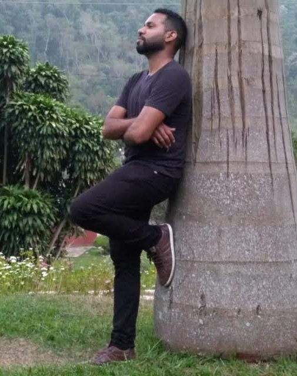

Sobre Mim
Olá! Meu nome é Reinaldo e sou apaixonado por tecnologia, filmes e livros que me fazem pensar. Acredito que o conhecimento e a criatividade são ferramentas poderosas para transformar o mundo. Gosto de aprender coisas novas e compartilhar o que descubro com outras pessoas. Sou um eterno aprendiz e sempre buscando novos desafios!
Conecte-se comigo nas redes sociais:
Filme que vi: Como Tudo Começou
Assisti a este filme recentemente e fiquei profundamente impactado pela mensagem e pela forma como ele retrata a criação do universo e o amor de Deus. É uma produção adventista que nos leva a refletir sobre nossas origens e propósito na vida. Recomendo fortemente a todos que buscam uma perspectiva inspiradora sobre a fé e a ciência.
Livro que li: O Grande Conflito: Uma saga milenar e seu final surpreendente.

Este livro é uma leitura poderosa que explora a história do conflito entre o bem e o mal, desde o seu início até os eventos finais. Ele oferece uma visão profunda sobre a luta entre Cristo e Satanás, revelando os princípios por trás dos grandes movimentos religiosos e sociais. É um livro que expande a mente e fortalece a fé. É possível adquirir uma cópia do livro aqui.